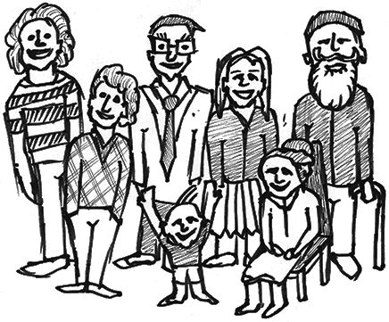
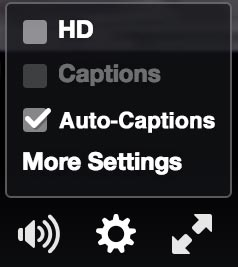
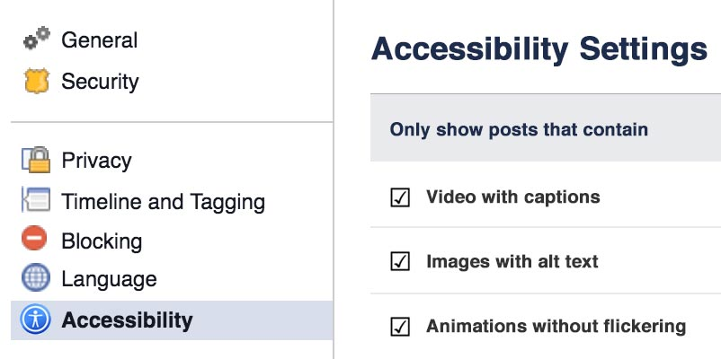
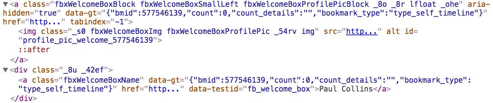
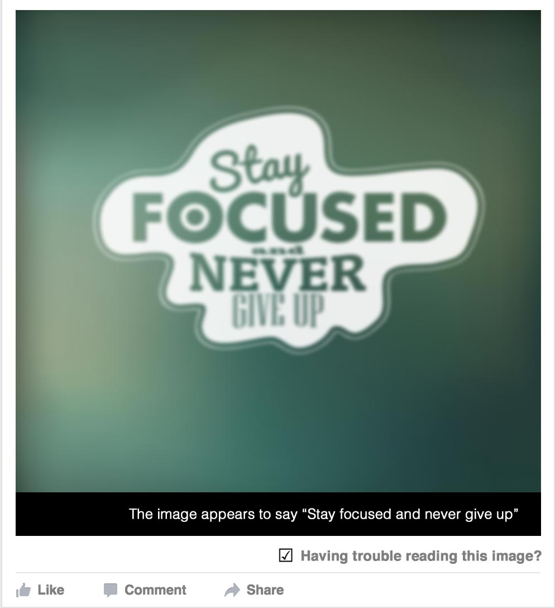
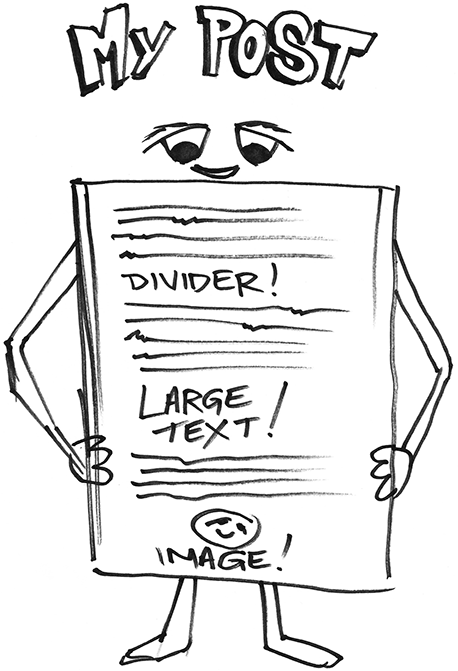
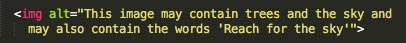
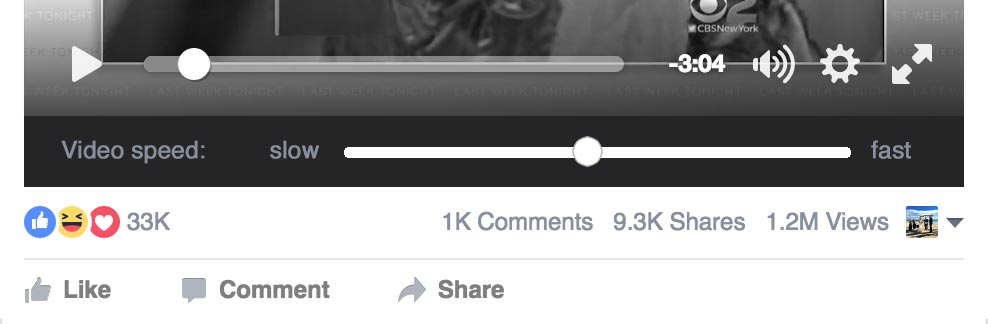
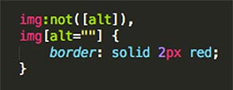

Facebook Accessibility
In recent years, Facebook has been pushing the boundaries of accessibility, becoming a leader in making the web inclusive for everyone. As a developer that always advocates for accessibility in my projects, I've really been inspired by the brilliant efforts of the Facebook team.
I wanted to showcase 9 ideas that could help with the Facebook's accessibility.

Idea number 1
Automatic transcribing of audio on videos, which is then automatically added to the captioning (swear word filter though perhaps!)

Idea number 2
A set of controls in the settings section to filter out inaccessible content such as:
- Hide posts with video that don’t have captioning
- Hide posts with images that don’t have user created Alt text
- Hide posts that contain content with repetitive flashing movement or rapid animation

Idea number 3
The profile icon in the left navigation appears to be missing alt text. Depending on the impact to the code base, you could do one of the following (in order of preference):
- As both links are going to the same place, remove one and wrap a single HREF around both image and text. If needing to satisfy HTML4 doctype requirements, remove the block element DIV inside the HREF and change to a SPAN. A preferred option would be to remove the DIV and use CSS to float the image to the left.
- Leave two links as they are and add descriptive ALT text specific to the image. For example: 'Paul Collins profile image'

Idea number 4
For instances when an image contains text that is blurry or of low contrast, an option to print a caption of the text below the image, for people who have low vision, vestibular disorders or other affected conditions and don't use screen readers.

Idea number 5
For people with Cognitive and Neurological disorders, an option to break up large blocks of text within posts.
This could be done with a simple horizontal rule every 'nth' paragraph, or perhaps by increasing the text size for a single paragraph every 'nth' paragraph. You could even ask users if they'd like to add images or emoticons into their posts to break the flow up.

Idea number 6
Build on automatic alt text by automatically reading any text within an image and adding to the alt attribute:
For example: "This image may contain trees and the sky and may also contain the words 'Reach for the sky'"

Idea number 7
The image carousels are difficult to navigate using keyboard only, the following options could help.
- Add tabindex="0" to the two chevrons
- Use aria-live="assertive" the chevron and using Javascript, change the text according to what the current image is
- Using Javsacript, detect how many items in carousel and notify user when they've reached the end and are about to start again.
Idea number 8
For people who have Vestibular disorders, are Autistic, or have other affected conditions, have an option to slow down animation in videos.

Idea number 9
For new content from third party developers, such as apps, Accessibility issues could be highlighted using CSS or Javascript. For instance, you could have a CSS rule that highlights all images that contain empty or missing alt attributes on a page.

Thanks for checking out my ideas
Once again, I'm really inspired by the effort Facebook is putting into accessibility and I'd love to help contribute to that mission of making the web available to everyone.
If you'd like to chat about these ideas and more, please get in touch at pauldcollins@gmail.com.
Thanks for your time,
Paul